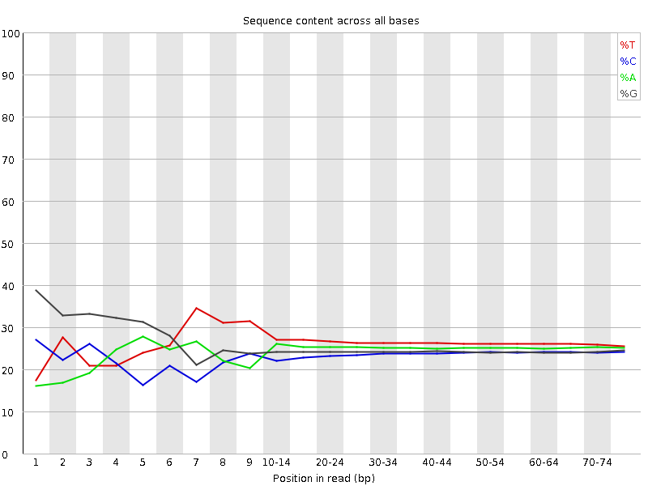
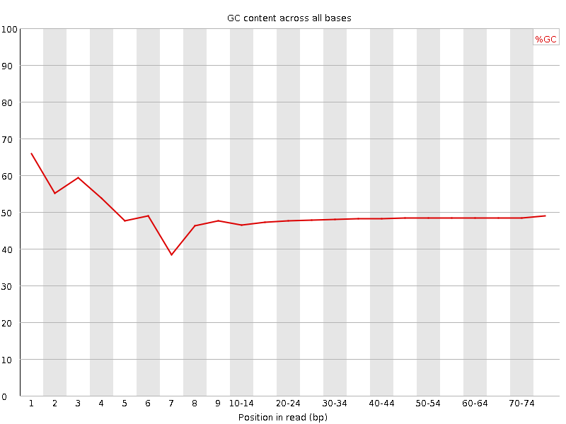
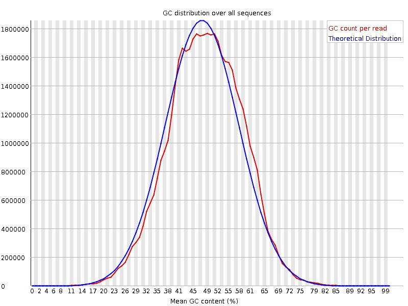
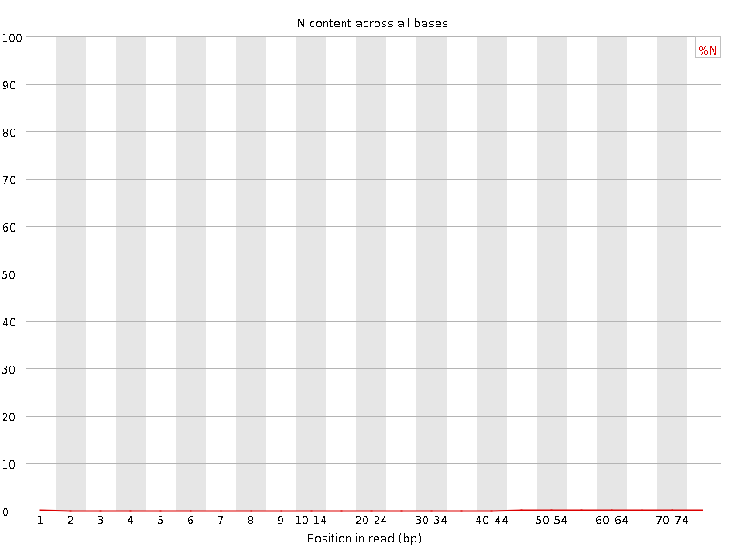
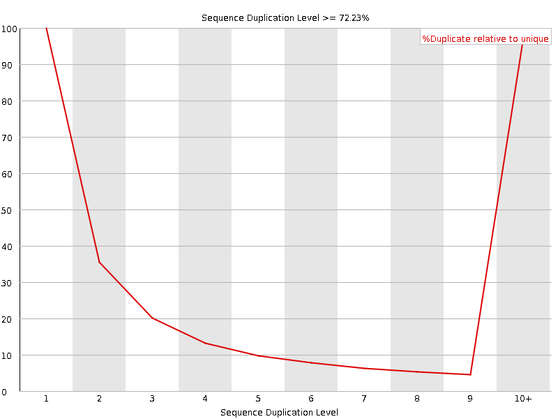
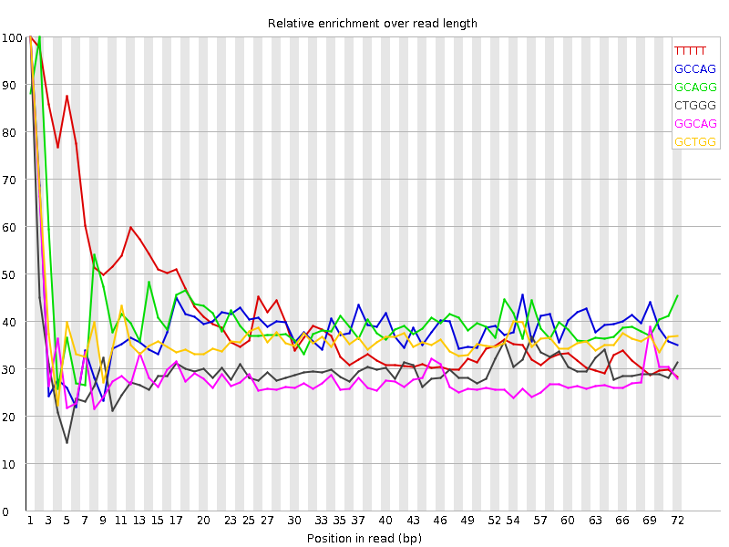

![[OK]](Icons/tick.png) Basic Statistics
Basic Statistics
| Measure | Value |
|---|---|
| Filename | SRR315326_1.fastq |
| File type | Conventional base calls |
| Encoding | Sanger / Illumina 1.9 |
| Total Sequences | 36490394 |
| Filtered Sequences | 0 |
| Sequence length | 76 |
| %GC | 48 |
![[FAIL]](Icons/error.png) Per base sequence quality
Per base sequence quality

Per sequence quality scores

Per base sequence content

Per base GC content

Per sequence GC content

Per base N content

Sequence Length Distribution

Sequence Duplication Levels

Overrepresented sequences
No overrepresented sequences
![[WARN]](Icons/warning.png) Kmer Content
Kmer Content

| Sequence | Count | Obs/Exp Overall | Obs/Exp Max | Max Obs/Exp Position |
|---|---|---|---|---|
| TTTTT | 8928915 | 2.642499 | 6.3561296 | 1 |
| GCCAG | 5070445 | 2.2262008 | 5.7344213 | 1 |
| GCAGG | 5335275 | 2.2138677 | 5.4194794 | 2 |
| CTGGG | 5560430 | 2.1835988 | 7.242317 | 1 |
| GGCAG | 5152365 | 2.1379695 | 7.4167256 | 1 |
| GCTGG | 5066600 | 1.9896699 | 5.4062085 | 1 |
| GGGGG | 5059290 | 1.9870638 | 8.510542 | 2 |
| GGGCA | 4457835 | 1.8497747 | 5.519855 | 1 |
| TGGGG | 4666005 | 1.7317538 | 5.331861 | 1 |
| GGGAA | 4360600 | 1.7075241 | 5.854676 | 1 |
| GGGAG | 4223510 | 1.6563227 | 5.209305 | 1 |
| GGGGA | 4200830 | 1.6474283 | 7.3250766 | 1 |
| GGGTG | 3963130 | 1.4708871 | 5.0036783 | 2 |
| GGGGT | 3856475 | 1.4313028 | 6.7433805 | 3 |
| GTGGG | 3852730 | 1.4299127 | 6.6000066 | 1 |
| CGGGG | 2611560 | 1.0852896 | 9.180382 | 1 |